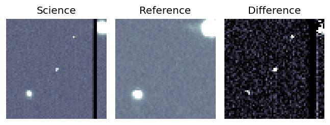
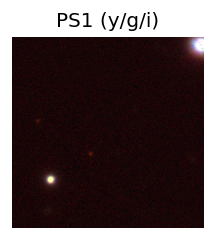
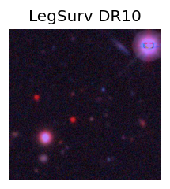
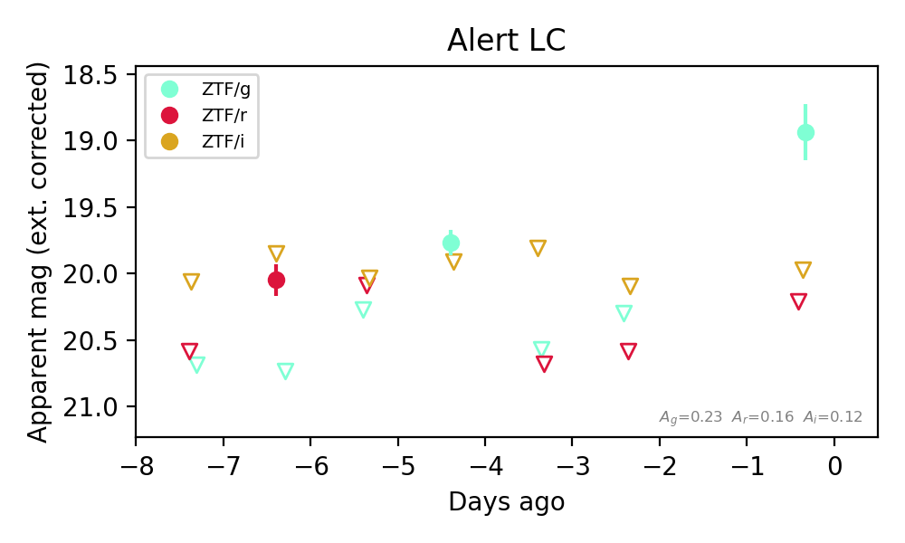

Candidate List 20260922Last night — ZTF: 2,822 passed basic cuts (60 young) · LSST: 0 passed basic cuts (0 young)Previous Day Next Day
Section 1: New Sources (age<1d) Section 2: Old (1-5d) sources observed last nightplaceholder
Section 1: New Afterglow/FBOT Cands Last Night (1)
1. [ZTF] ZTF26abwqpsg (FBOT?) [Back to Top] [Share] [Trigger Swift] [Fritz Alert] [Fritz Source] [Lasair]RA, Dec: 261.05662, 29.39341 17h24m13.59s, 29d23m36.29sGalactic (l, b): 52.60728, 30.78384 ext(g-r) = 0.04


TESS: Sectors [ 25 26 52 53 79 117 118]
SDSS (<15 kpc):Found SDSS phot-z: z=0.03; peak abs mag = -17.56
PS1: 0 sources in 3 arcsec
LegacySurvey: 1 sources in 3 arcsec Closest: d = 2.32 arcsec, 1.0 deg (east of north) photoz=0.16 (68% bounds 0.07, 0.38), type=REX peak abs mag (ext. corrected) = -21.57 (68% bounds -19.65, -23.7)


Extinction-corrected gr color:
From alerts: -0.3 +/- 0.09 mag
Rise Rate:
g: 0.58 mag/day
r: 0.5 mag/day
Fade Rate:
Section 2: Older Sources Observed Last Night (7)
0. [ZTF] ZTF26abvcyoo (FBOT?) [Back to Top] [Share] [Trigger Swift] [Fritz Alert] [Fritz Source] [Lasair]RA, Dec: 73.08491, 5.15068 4h52m20.38s, 5d 9m2.44sGalactic (l, b): 193.47362, -23.53051 ext(g-r) = 0.098


TESS: Sectors [ 5 32 98 110]
NED host (10 arcsec):Found CGCG 420-010 (G, 5.4″); NED spec-z: z=0.0298 [zflag S1L]; peak abs mag = -18.29
PS1: 0 sources in 3 arcsec
LegacySurvey: 1 sources in 3 arcsec Closest: d = 1.55 arcsec, 41.2 deg (east of north) photoz=0.08 (68% bounds 0.06, 0.12), type=SER peak abs mag (ext. corrected) = -20.5 (68% bounds -19.86, -21.37)

Extinction-corrected gr color:
From alerts: -0.13 +/- 0.07 mag
Extinction-corrected gi color:
From alerts: -0.47 +/- 0.07 mag
Extinction-corrected ri color:
From alerts: -0.2 +/- 0.08 mag
Rise Rate:
g: 0.98 mag/day
r: 0.39 mag/day
i: 0.29 mag/day
Fade Rate:
1. [ZTF] ZTF26abvdwfx (Afterglow?) [Back to Top] [Share] [Trigger Swift] [Fritz Alert] [Fritz Source] [Lasair]RA, Dec: 291.84662, 43.73915 19h27m23.19s, 43d44m20.93sGalactic (l, b): 75.9883, 12.40436 ext(g-r) = 0.178


TESS: Sectors [ 15 40 41 54 55 74 75 81 82 119 120]
PS1: 0 sources in 3 arcsec
LegacySurvey: 0 sources in 3 arcsec

Extinction-corrected gr color:
From alerts: -0.99 +/- 99 mag
Rise Rate:
r: 1.08 mag/day
Fade Rate:
r: 22.35 mag/day
2. [ZTF] ZTF26abvdwrk (Afterglow?) [Back to Top] [Share] [Trigger Swift] [Fritz Alert] [Fritz Source] [Lasair]RA, Dec: 302.08273, 50.6744 20h 8m19.85s, 50d40m27.83sGalactic (l, b): 85.56495, 9.61516 ext(g-r) = 0.21


TESS: Sectors [ 14 15 16 41 54 55 56 75 76 81 83 120 121]
PS1: 1 source in 3 arcsec Closest: d = 6.61 arcsec photoz=0.35+/-0.11 peak abs mag = -23.41
LegacySurvey: 0 sources in 3 arcsec

Extinction-corrected gr color:
From alerts: 0.17 +/- 0.14 mag
Consistent with synchrotron, g-r>0!
Rise Rate:
r: 0.58 mag/day
Fade Rate:
3. [ZTF] ZTF26abwafvw (FBOT?) [Back to Top] [Share] [Trigger Swift] [Fritz Alert] [Fritz Source] [Lasair]RA, Dec: 273.95735, 42.77599 18h15m49.76s, 42d46m33.55sGalactic (l, b): 70.24161, 24.25288 ext(g-r) = 0.04


TESS: Sectors [ 26 40 52 53 54 74 79 81 119]
PS1: 0 sources in 3 arcsec
LegacySurvey: 1 sources in 3 arcsec Closest: d = 0.69 arcsec, 314.9 deg (east of north) photoz=0.96 (68% bounds 0.76, 1.16), type=REX peak abs mag (ext. corrected) = -25.28 (68% bounds -24.66, -25.78)


Extinction-corrected gr color:
From alerts: -0.28 +/- 0.17 mag
Rise Rate:
g: 1.06 mag/day
r: 0.77 mag/day
Fade Rate:
4. [ZTF] ZTF26abwqfcv (Afterglow?FBOT?) [Back to Top] [Share] [Trigger Swift] [Fritz Alert] [Fritz Source] [Lasair]RA, Dec: 48.84407, 25.01121 3h15m22.58s, 25d 0m40.37sGalactic (l, b): 159.7749, -27.37649 ext(g-r) = 0.148


TESS: Sectors [18 42 43 44 70 71]
PS1: 1 source in 3 arcsec Closest: d = 0.77 arcsec photoz=0.38+/-0.14 peak abs mag = -21.95
LegacySurvey: 0 sources in 3 arcsec

Extinction-corrected gr color:
From alerts: -0.09 +/- 0.26 mag
Extinction-corrected gi color:
From alerts: -0.2 +/- 0.24 mag
Extinction-corrected ri color:
From alerts: -0.1 +/- 0.29 mag
Consistent with synchrotron, g-r>0!
Rise Rate:
g: 0.6 mag/day
r: 0.26 mag/day
Fade Rate:
5. [ZTF] ZTF26abwrwuk (FBOT?) [Back to Top] [Share] [Trigger Swift] [Fritz Alert] [Fritz Source] [Lasair]RA, Dec: 6.68483, -0.55111 0h26m44.36s, 0d-33m-4.01sGalactic (l, b): 109.33723, -62.76913 WARNING: -3.16 deg from ecliptic plane ext(g-r) = 0.021


TESS: Sectors [42 43 70]
PS1: 0 sources in 3 arcsec
LegacySurvey: 1 sources in 3 arcsec Closest: d = 0.44 arcsec, 321.1 deg (east of north) photoz=1.03 (68% bounds 0.72, 1.6), type=REX peak abs mag (ext. corrected) = -25.12 (68% bounds -24.17, -26.3)

Extinction-corrected gr color:
From alerts: -1.11 +/- 99 mag
Rise Rate:
r: 1.22 mag/day
Fade Rate:
6. [ZTF] ZTF26abwtxcf (Afterglow?) [Back to Top] [Share] [Trigger Swift] [Fritz Alert] [Fritz Source] [Lasair]RA, Dec: 12.88212, 18.29659 0h51m31.71s, 18d17m47.71sGalactic (l, b): 122.9621, -44.57516 ext(g-r) = 0.075


TESS: Sectors [17 42 43 57 84]
PS1: 0 sources in 3 arcsec
LegacySurvey: 1 sources in 3 arcsec Closest: d = 6.39 arcsec, 14.3 deg (east of north) photoz=0.92 (68% bounds 0.71, 2.2), type=PSF peak abs mag (ext. corrected) = -24.99 (68% bounds -24.31, -27.33)

Extinction-corrected gr color:
From alerts: -1.27 +/- 99 mag
Extinction-corrected gi color:
From alerts: -1.04 +/- 99 mag
Extinction-corrected ri color:
From alerts: 0.2 +/- 99 mag
Rise Rate:
g: 0.66 mag/day
r: 0.54 mag/day
Fade Rate:
g: 0.78 mag/day
r: 0.21 mag/day